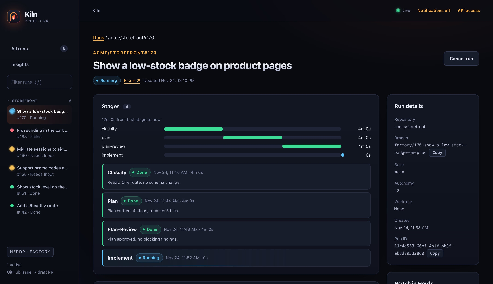

Label an issue.Get a reviewed pull request.
Kiln is a software factory. It runs a pipeline of Claude Code agents, each in its own container and terminal, reviews the result, and merges it when your merge policy allows. Otherwise it holds the change for you.
- classifyIs it ready?
- planWrite the plan
- plan-reviewCan send it back
- implementCode and tests
- reviewCan send it back
- prOpen the PR
- mergedBy your policy
Every stage is a fresh agent in a Docker container, working in its own git worktree, inside a Herdr terminal you can attach to at any time. An unclear issue stops the run and asks a question on the issue.

You decide how much Kiln does alone
Each repository picks an autonomy level. Four levels, from never merging to merging anything that passes.
- L0
Approve every step
The run pauses after each stage until you say continue.
- L1
Draft pull request
Kiln opens a draft and stops. A person reviews and merges. This is the default.
- L2
Merge unless it is critical
Kiln merges, or queues the merge until checks pass. Critical paths, one-way decisions and high-risk changes wait for you.
- L3
Merge everything that passes
For repositories where you trust the tests more than you trust a review queue.
The rules are read from .factory/policy.json on the base branch, so an agent can't loosen them on its own branch.
Built for work that runs while you do something else
Starts from where your work already is
Add the factory label to a GitHub issue, paste a URL, or pull tickets from Jira or any tracker with labels and comments. Status labels follow the run.
Several runs at once
Each run gets its own branch and worktree. The dashboard warns when two touch the same files, and a resolve agent fixes conflicts after another run merges first.
Review loops, not rubber stamps
A reviewer can send the plan or the code back for another pass. Reviewed pull requests describe the change, link the issue and list known limits.
Stays in your hands
Approve a held change or send it back with feedback the agent reads. A needs-you inbox collects approvals, questions and failures in one place.
Sandboxed, with secrets kept out
Each stage runs in a container that sees only its worktree. Credentials come from your environment and never enter the run record or logs.
Crash-safe
Runs persist to disk, resume after a restart, and time out instead of hanging. Fix anything on the fly from a web shell in the run's worktree.
Run it on your machine
Kiln needs Node, Docker, the GitHub CLI and Herdr. Everything runs locally.
scripts/setup.sh # checks your tools, installs, writes .env, builds the agent containerIt never overwrites an existing .env, and --check only reports what is missing. Then start it in two terminals, or do every step by hand:
# once, from the repository root
npm install
cp apps/control-plane/.env.example apps/control-plane/.env
make -C apps/runtime agent-image # build the agent container
herdr --session factory server & # the terminal layer
npm run dev # dashboard at http://127.0.0.1:3775The script asks for these; otherwise set FACTORY_REPOS=owner/repo, sign in with gh auth login, add a Claude credential from claude setup-token, then label an issue. The README covers the rest.